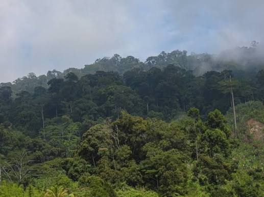

LANTAPAN BUKIDNON
Mt. Dulang-Dulang
One of the highest mountain peaks in the Philippines.
>PLACE TO EXPLORE
Explore the beautiful destinations that make Bukidnon a wonderful place to visit.
One of the highest mountain peaks in the Philippines.
>
A scenic hiking and camping destination with beautiful highland views.

A remarkable mountain range with forests and challenging trails.

A mountain destination surrounded by forest landscapes.

Part of Bukidnon's beautiful mountain and forest landscapes.

Discover highland views and outdoor camping experiences.